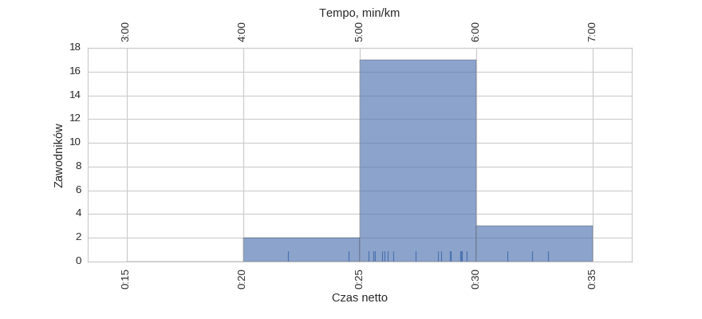
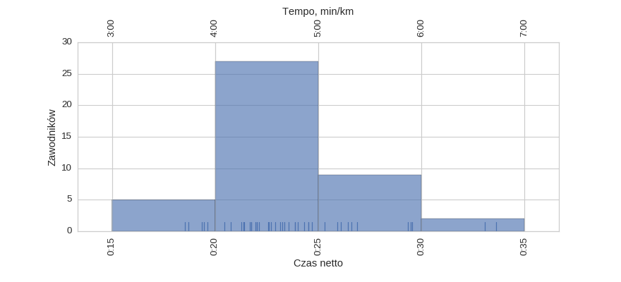
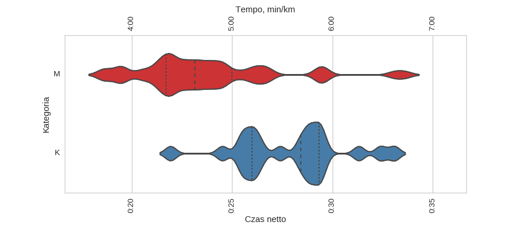
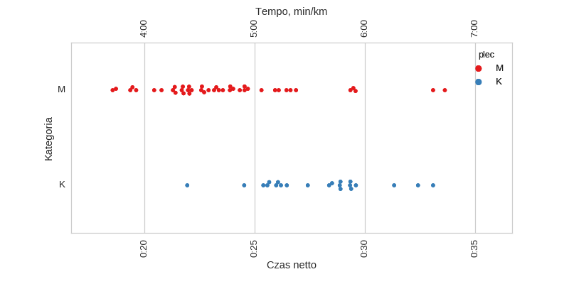
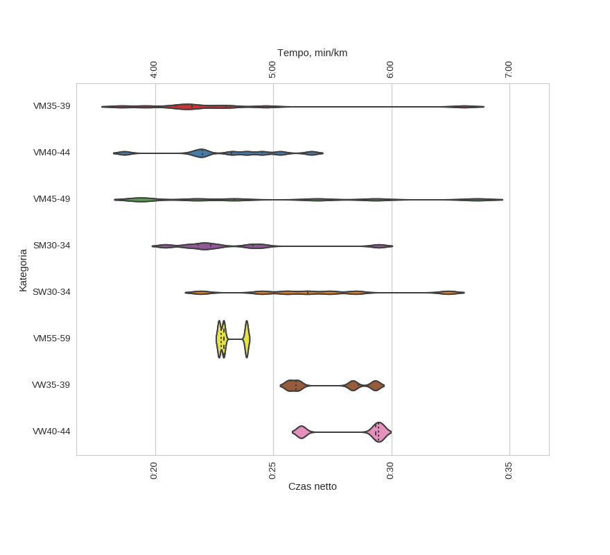
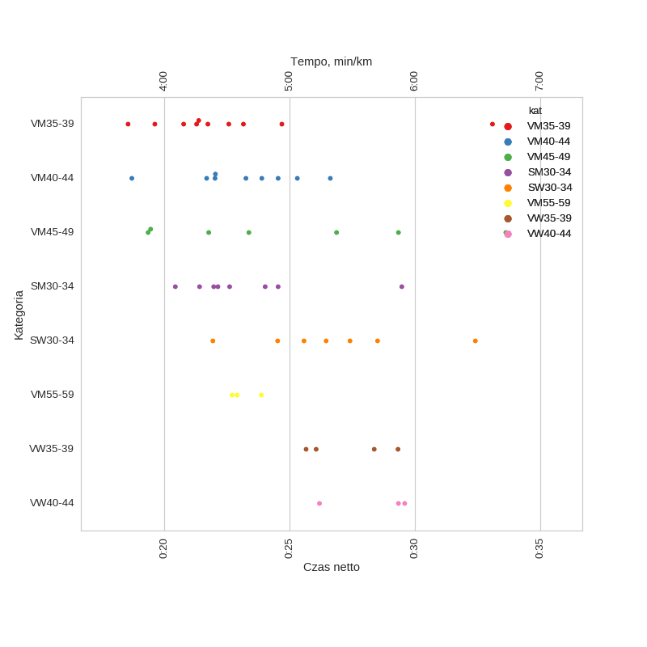

Statystyki biegowe
Statystyki biegoweParkRun Ursynów (2016-10-15)
Histogramy
Klasyfikacja generalna

| mean | std | min | 25% | 50% | 75% | max | |
|---|---|---|---|---|---|---|---|
| czas | 0:25:07 | 0:03:44 | 0:18:33 | 0:22:02 | 0:24:32 | 0:28:22 | 0:33:37 |
kobiety

| mean | std | min | 25% | 50% | 75% | max | |
|---|---|---|---|---|---|---|---|
| czas | 0:27:51 | 0:02:39 | 0:21:56 | 0:25:59 | 0:28:26 | 0:29:19 | 0:33:05 |
mężczyźni

| mean | std | min | 25% | 50% | 75% | max | |
|---|---|---|---|---|---|---|---|
| czas | 0:23:43 | 0:03:26 | 0:18:33 | 0:21:42 | 0:23:09 | 0:24:59 | 0:33:37 |
Wykresy rybkowe
wg płci


| czas_netto_s | count | |||||||
|---|---|---|---|---|---|---|---|---|
| mean | std | min | 25% | 50% | 75% | max | ||
| plec | ||||||||
| K | 0:27:51 | 0:02:39 | 0:21:56 | 0:25:59 | 0:28:26 | 0:29:19 | 0:33:05 | 22 |
| M | 0:23:43 | 0:03:26 | 0:18:33 | 0:21:42 | 0:23:09 | 0:24:59 | 0:33:37 | 43 |
wg kategorii


| czas_netto_s | count | |||||||
|---|---|---|---|---|---|---|---|---|
| mean | std | min | 25% | 50% | 75% | max | ||
| kat | ||||||||
| SM30-34 | 0:23:19 | 0:02:48 | 0:20:26 | 0:21:49 | 0:22:22 | 0:24:08 | 0:29:28 | 8 |
| SW30-34 | 0:26:40 | 0:03:17 | 0:21:56 | 0:25:02 | 0:26:27 | 0:27:57 | 0:32:24 | 7 |
| VM35-39 | 0:22:40 | 0:04:02 | 0:18:33 | 0:20:53 | 0:21:33 | 0:23:00 | 0:33:05 | 10 |
| VM40-44 | 0:23:06 | 0:02:20 | 0:18:42 | 0:22:01 | 0:23:15 | 0:24:32 | 0:26:37 | 9 |
| VM45-49 | 0:24:49 | 0:05:21 | 0:19:21 | 0:20:36 | 0:23:22 | 0:28:06 | 0:33:37 | 7 |
| VM55-59 | 0:23:09 | 0:00:37 | 0:22:42 | 0:22:48 | 0:22:54 | 0:23:23 | 0:23:52 | 3 |
| VW35-39 | 0:27:20 | 0:01:46 | 0:25:39 | 0:25:57 | 0:27:12 | 0:28:36 | 0:29:19 | 4 |
| VW40-44 | 0:28:22 | 0:01:53 | 0:26:11 | 0:27:45 | 0:29:20 | 0:29:27 | 0:29:35 | 3 |
Menu
HistogramyWykresy rybkowe
∙ wg płci
∙ wg kategorii
Dystans: 5.0 km
Liczba uczestników: 65
Wygenerowano: 2016-10-17 21:44:21.104540